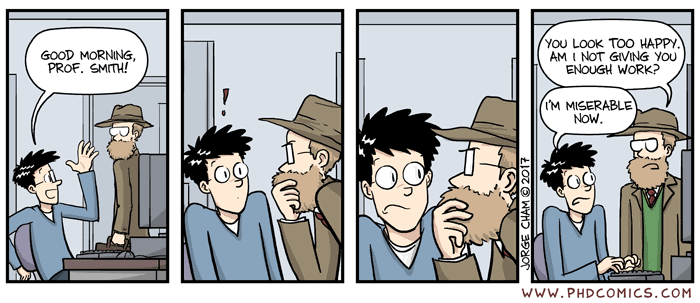
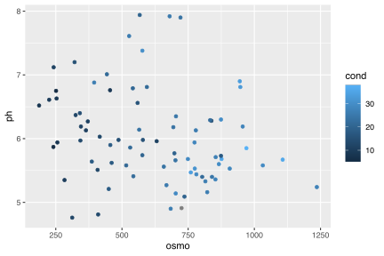
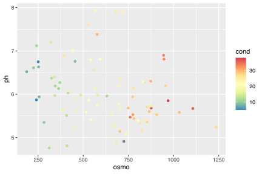
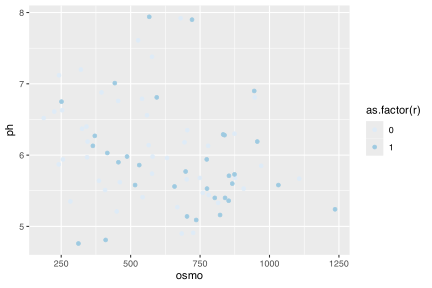
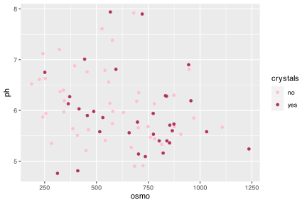

![]()
# To create a list of ALL available data
# Not really recommended as the output is overwhelming
data(package = .packages(all.available = TRUE))
# To look for datasets within a single known package
# type the name of the package followed by '::'
# This tells R you want to look in the specified package
# When the autocomplete bubble comes up you may scroll
# through it with the up and down arrows
# Look for objects that have a mini spreadsheet icon
# These are the datasets
# Try typing the following code and see what happens...
datasets::6. Brewing colours
Concocting a caucophony colour palettes in ggplot

“Microbiology and meteorology now explain what only a few centuries ago was considered sufficient cause to burn women to death.”
— Carl Sagan
“Knowledge is not a resource we simply stumble upon. It’s not something that we pluck out of the air. Knowledge is created. It is coaxed into existence by thoughtful, creative people. It is not a free good. It comes only to the prepared mind.”
— Frank H. T. Rhodes
Now that you have seen the basics of ggplot2, let’s take a moment to delve further into the beauty of our figures. It may sound vain at first, but the colour palette of a figure is actually very important. This is for two main reasons. The first being that a consistent colour palette looks more professional. But most importantly it is necessary to have a good colour palette because it makes the information in our figures easier to understand. The communication of information to others is central to good science.
1 R Data
Before you get going on our figures, you first need to learn more about the built in data that R has. The base R program already comes with heaps of example dataframes that you may use for practice. You don’t need to load our own data. Additionally, whenever you install a new package (and by now you’ve already installed dozens) it usually comes with several new dataframes. There are many ways to look at the data that you have available from your packages. Below I’ll show two of the many options.
You have an amazing amount of data available to you. So the challenge is not to find a dataframe that works for you, but to just decide on one. My preferred method is to read the short descriptions of the dataframes and pick the one that sounds the funniest. But please use whatever method makes the most sense to you. One note of caution, in R there are generally two different forms of data: wide OR long. You will see in detail what this means on Day 4, and what to do about it. For now you need to know that ggplot2 works much better with long data. To look at a dataframe of interest, you use the same method you would use to look up a help file for a function.
Over the years I’ve installed so many packages on my computer that it is difficult to chose a dataframe. The package boot has some particularly interesting dataframes with a biological focus. Please install this now to access to these data. I have decided to load the urine dataframe here. Note that library(boot) will not work on your computer if you have not installed the package yet. With these data you will now make a scatterplot with two of the variables, while changing the colour of the dots with a third variable.
# Load libraries
library(tidyverse)
library(boot)
# Load data
urine <- boot::urine
# Look at help file for more info
# ?urine
# Create a quick scatterplot
ggplot(data = urine, aes(x = osmo, y = ph)) +
geom_point(aes(colour = cond))
And now you have a scatterplot that is showing the relationship between the osmolarity and pH of urine, with the conductivity of those urine samples shown in shades of blue. What is important to note here is that the colour scale is continuous. How can we now this by looking at the figure? Let’s look at the same figure but use a discrete variable for colouring.
What is the first thing you notice about the difference in the colours? Why did you use as.factor() for the colour aesthetic for our points? What happens if you don’t use this? Try it now.
2 RColorBrewer
Central to the purpose of ggplot2 is the creation of beautiful figures. For this reason there are many built in functions that you may use in order to have precise control over the colours, as well as additional packages that extend your options even further. The RColorBrewer package should have been installed on your computer and activated automatically when you installed and activated the tidyverse. You will use this package for its lovely colour palettes. Let’s spruce up the previous continuous colour scale figure now.
# The continuous colour scale figure
ggplot(data = urine, aes(x = osmo, y = ph)) +
geom_point(aes(colour = cond)) +
scale_colour_distiller() # Change the continuous variable colour paletteDoes this look different? If so, how? The second page of the colour cheat sheet we included in the course material shows some different colour brewer palettes. Let’s look at how to use those here.
ggplot(data = urine, aes(x = osmo, y = ph)) +
geom_point(aes(colour = cond)) +
scale_colour_distiller(palette = "Spectral")
Does that help you to see a pattern in the data? What do you see? Does it look like there are any significant relationships here? How would you test that?
If you want to use colour brewer with a discrete variable, you use a slightly different function.
ggplot(data = urine, aes(x = osmo, y = ph)) +
geom_point(aes(colour = as.factor(r))) +
scale_colour_brewer() # This is the different function
The default colour scale here is not helpful at all. So let’s pick a better one. If you look at our cheat sheet you will see a list of different continuous and discrete colour scales. All you need to do is copy and paste one of these names into your colour brewer function with inverted commas.
3 Make your own palettes
This is all well and good. But didn’t I claim that this should give you complete control over our colours? So far it looks like it has just given you a few more palettes to use. And that’s nice, but it’s not ‘infinite choices’. That is where the Internet comes to your rescue. There are many places you may go to for support in this regard. The following links, in descending order, are very useful. And fun!
- http://tristen.ca/hcl-picker/#/hlc/6/0.95/48B4B6/345363
- http://tools.medialab.sciences-po.fr/iwanthue/index.php
- http://jsfiddle.net/d6wXV/6/embedded/result/
I find the first link the easiest to use. But the second and third links are better at generating discrete colour palettes. Take several minutes playing with the different websites and decide for yourself which one(s) you like.
4 Use your own palettes
Now that you’ve had some time to play around with the colour generators let’s look at how to use them with our figures. I’ve used the first web link to create a list of five colours. I then copy and pasted them into the code below, separating them with commas and placing them inside of c() and inverted commas. Be certain that you insert commas and inverted commas as necessary or you will get errors. Note also that you are using a new function to use our custom palette.
ggplot(data = urine, aes(x = osmo, y = ph)) +
geom_point(aes(colour = cond)) +
scale_colour_gradientn(colours = c("#A5A94D", "#6FB16F", "#45B19B",
"#59A9BE", "#9699C4", "#CA86AD"))To use your custom colour palettes with a discrete colour scale, you use a different function as seen in the code below. While you are at it, also see how to correct the title of the legend and its text labels. Sometimes the default output is not what you want for our final figure, especially if you are going to be publishing it. Also note in the following code chunk that rather than using hexadecimal character strings to represent colours in your custom palette, you are simply writing in the human name for the colours you want. This will work for the continuous colour palettes above, too.
ggplot(data = urine, aes(x = osmo, y = ph)) +
geom_point(aes(colour = as.factor(r))) +
scale_colour_manual(values = c("pink", "maroon"), # How to use custom palette
labels = c("no", "yes")) + # How to change the legend text
labs(colour = "crystals") # How to change the legend title
So now you have seen how to control the colours palettes in your figures. I know it is a bit much. Four new functions just to change some colours! That’s a bummer. Don’t forget that one of the main benefits of R is that all of your code is written down, annotated and saved. You don’t need to remember which button to click to change the colours, you just need to remember where you saved the code that you will need. And that’s pretty great in my opinion.
Task E
Today we learned the basics of ggplot2, how to facet, how to brew colours, and how to plot some basic summary statistics. Sjog, that’s a lot of stuff to remember… which is why we will now spend the rest of Day 2 putting our new found skills to use.
Please group up as you see fit to produce your very own ggplot2 figures. We’ve not yet learned how to manipulate/tidy up our data so it may be challenging to grab any ol’ dataset and make a plan with it. But try! Explore some of the other built-in datasets and find two or three you like. Or use your own data!
The goal by the end of today is to have created four figures and join them together via faceting and the options offered by ggarrange(). We will be walking the room to help with any issues that may arise.
Make sure the above assignment is included within a Quarto file rendered to .html. Include some textual information to inform the reader of the intent of the plots and what patterns are visible.
Submission instructions
Submit a R (Quarto) script wherein you provide answers to the Task questions by no later than 8:00 tomorrow.
Provide a neat and thoroughly annotated and labelled Rmarkdown file which outlines the graphs and all calculations (as necessary).
Please label the Rmarkdown and resulting HTML files as follows:
BCB744_<first_name>_<last_name>_Task_E.qmd, andBCB744_<first_name>_<last_name>_Task_E.html
(the < and > must be omitted as they are used in the example as field indicators only).
Failing to follow these instructions carefully, precisely, and thoroughly will cause you to lose marks, which could cause a significant drop in your score as formatting counts for 15% of the final mark (out of 100%).
Submit your Tasks on iKamva when ready.
5 Session info
Reuse
Citation
BibTeX citation:
@online{smit2021,
author = {Smit, AJ},
title = {6. {Brewing} Colours},
date = {2021-01-01},
url = {https://tangledbank.netlify.app/BCB744/intro_r/06-brewing.html},
langid = {en}
}
For attribution, please cite this work as:
Smit A (2021) 6. Brewing colours. https://tangledbank.netlify.app/BCB744/intro_r/06-brewing.html.